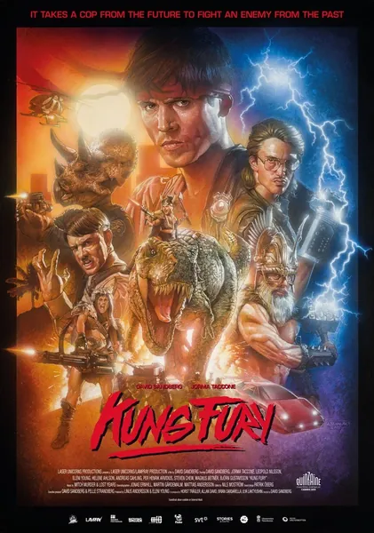

Кунг Фьюри
Kung Fury
2015
Боевик, Комедия
Майами, 1985 год: полицейский-мастер кунг-фу Кунг Фьюри сражается с Кунг Фюрером, который взломал время, прибыв из будущего. Машина времени собрана из корпусов игровых автоматов, среди напарников героя — трицератопс и Тор, а викинги с бензопилами занимаются самым настоящим «взломом». Это получасовой шедевр с Kickstarter, стилизованный под эпоху VHS и вобравший в себя всё, что любили в 80-х: компьютеры, игровые автоматы, неон и абсурд. Идеальный короткометражный фильм, позволяющий понять, как люди представляли себе компьютеры и кунг-фу задолго до появления умных часов.
Описание на английском
Miami, 1985: kung-fu cop Kung Fury fights Kung Führer, who has hacked time from the future. The time machine is assembled from arcade cabinets, sidekicks include a triceratops and Thor, and Vikings with chainsaws do literal hacking. A half-hour Kickstarter masterpiece styled after the VHS era, packing in everything the 80s loved: computers, arcades, neon and absurdity. Perfect short viewing to grasp how the world imagined computers and kung-fu long before smartwatches.